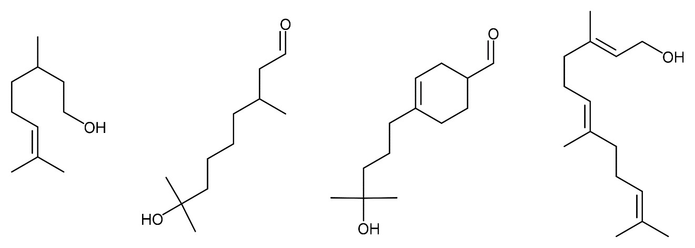
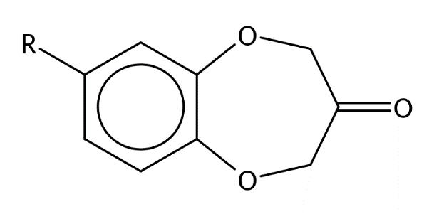
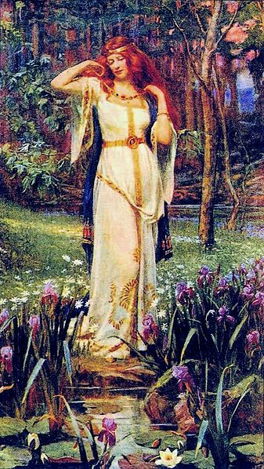
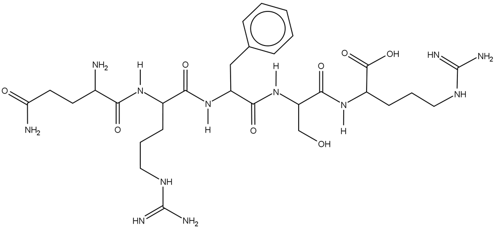
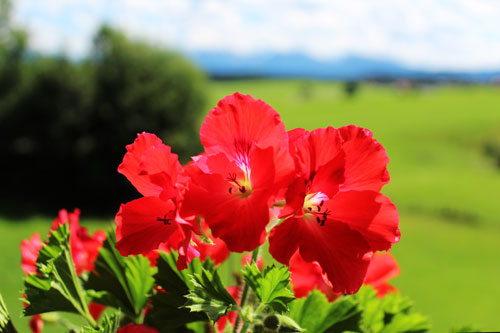
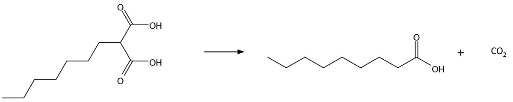

Kemi A
Ny ordning
kl. 09.00-14.00
Vejledning
Prøven
Opgavesættet består af 4 opgaver med i alt 15 delopgaver.Alle hjælpemidler er tilladt.
Følgende hjælpemidler forudsættes:
DATABOG fysik kemi (F&K Forlaget), 11. udgave (2007) eller senere udgave.
Opgavebesvarelsen
Din opgavebesvarelse skal afleveres i et samlet dokument, gemt i pdf-format.
Bedømmelse
Ved den skriftlige prøve lægges der vægt på din evne til at:
| - | anvende fagets viden og metoder til behandling af kemiske problemstillinger | |
| - | gøre iagttagelser og analysere eksperimentelt arbejde, samt efterbehandle og vurdere resultater herfra | |
| - | gennemføre og præsentere relevante beregninger med korrekt brug af fagsprog | |
| - | benytte relevante matematiske modeller, metoder og repræsentationsformer | |
| - | benytte fagspecifikke digitale værktøjer hensigtsmæssigt | |
| - | dokumentere anvendte informationer fra forskellige kilder | |
| - | udtrykke sig skriftligt, således at tankegangen fremstår struktureret og tydelig. |
Opgave 1: Parfume og allergi
|
Parfume indeholder 10-300 forskellige naturlige og syntetiske duftstoffer. Nogle af duftstofferne er allergifremkaldende. Specielt oak moss blandingen, der er udvundet af lav på egetræer, har været årsag til mange allergier. Næst efter nikkel er duftstoffer i parfumer den hyppigste årsag til kontaktallergi.
Når hudlæger tester patienter for parfumeallergi, anvender de specifikke testblandinger af allergifremkaldende duftstoffer. Nogle af de testblandinger, som anvendes i Europa, indeholder de fire duftstoffer, som er vist i figur 1.1. |

| A | B | C | D |
Figur 1.1
Figur 1.1.mrv Figur 1.1.sk2
Stoffet A har det systematiske navn 3,7-dimethyloct-6-en-1-ol.
| a) | Forklar det systematiske navn for A. |
De fire duftstoffer i figur 1.1 er fordelt i fire glas, 1, 2, 3 og 4, med et duftstof i hvert glas. Der gennemføres en række kemiske tests på stofferne, som vist i filmen nedenfor.
Kemiske tests
| b) | Argumenter for, hvordan reagensglassene kan tilordnes de fire stoffer på baggrund af de kemiske tests. |
Marine dufte i en parfume skyldes stoffer med strukturen vist i figur 1.2. R er en alkylgruppe.

Figur 1.2
I figur 1.3 ses 1H-NMR-spektret for et af de marine duftstoffer i parfumen. Spektrometerfrekvensen er 400 MHz. Duftstoffet har molekylformlen C14H18O3.

Figur 1.3
| c) | Bestem strukturformlen for R. Inddrag integralforhold, kemiske skift og koblingsmønstre, idet signaler i spektret tilordnes stoffets strukturformel. |
Opgave 2: Vanadium - et metal der danner smukt farvede forbindelser
|
Vanadium er et hårdt korrosionsbestandigt metal, der bruges i særligt hårde stållegeringer fx i kirurgiske redskaber og i jetmotorer.
Den danske virksomhed Haldor Topsøe fremstiller blandt andet katalysatorer, som indeholder vanadium. Katalysatorerne benyttes til at fjerne svovldioxid fra røggasser. Grundstoffet er på grund af sine mange smukt farvede forbindelser opkaldt efter gudinden Vanadís, også kaldet Freja. Det violette stof vanadiumtrichlorid fremstilles ved at opvarme det røde vanadiumtetrachlorid til 165 °C, hvorefter ligevægten i figur 2.1 indstiller sig. 2 VCl4(g) ⇌ 2 VCl3(s) + Cl2(g)
Figur 2.1
|

|
| a) | Angiv reaktionsbrøken for reaktionen i figur 2.1. |
Ligevægtskonstanten for reaktionen i figur 2.1 er bestemt ved forskellige temperaturer. I figur 2.2 ses sammenhængen mellem temperaturen og ligevægtskonstanten.
Figur 2.2
| b) | Vis, med udgangspunkt i figur 2.2, at ligevægtskonstanten er 0,523 bar−1 ved 165 °C. |
|
| c) | Bestem ΔH°og ΔS° for reaktionen i figur 2.1. Inddrag figur 2.2. Kommenter resultaterne i forhold til reaktionen. |
En beholder med et volumen på 2,00 L tilføres 10,0 g vanadiumtetrachlorid, VCl4 og opvarmes til 165 °C. Herefter forløber reaktionen i figur 2.1 mod ligevægt.
| d) | Beregn partialtrykket af dichlor og af vanadiumtetrachlorid, når ligevægten er indstillet ved 165 °C. |
Opgave 3: Opiorfin - et smertestillende stof i spyt
|
Opiorfin er et peptid, der findes naturligt i spyt. Det virker smertestillende ved at blokere et enzym, der nedbryder enkephalin. Enkephaliner er naturligt forekommende smertestillende opioider. Opiorfin nedbrydes hurtigt i kroppen og kan derfor ikke anvendes som lægemiddel. Forskere arbejder på at få godkendt en mere stabil udgave af opiorfin, hvor man har lavet en mindre ændring af strukturen. Forskerne forventer, at lægemidlet har færre bivirkninger end traditionelle smertestillende midler af typen opioider.
|

|

Figur 3.1
Figur 3.1.mrv Figur 3.1.sk2
| a) | Marker funktionelle grupper i strukturen vist i figur 3.1, som tilhører stofklassen amider. |
Opiorfiner virker smertestillende ved at hæmme enzymet neprilysin. Dette enzym katalyserer hydrolysen af enkephaliner, som er naturlige smertestillende stoffer i kroppen.
Den enzymatiske omdannelse af en enkephalin undersøges af en elev.
Der fremstilles en række reaktionsblandinger med forskellige koncentrationer af enkephalin. Alle reaktionsblandinger indeholder enzymet neprilysin i samme koncentration.
Initialhastigheden v for omdannelse af enkephalin bestemmes for de forskellige koncentrationer af enkephalin i reaktionsblandingen. Resultaterne er vist i figur 3.2 og gemt i datafilen.
Excel-fil
Figur 3.2
| b) | Vis, at hastighedsudtrykket med god tilnærmelse svarer til en 1. ordensreaktion med hensyn til enkephalin for koncentrationer af enkephalin under 10 µm.
Bestem hastighedskonstanten for nedbrydning af enkephalin for koncentrationer af enkephalin under 10 µm. |
Sammenhængen mellem initialhastigheden og koncentrationen af enkephalin kan beskrives ved nedenstående lineære model

b =
1vmax
og vmax er den maksimale reaktionshastighed, som opnås, når enzymet er mættet med enkephalin.
| c) | Bestem vmax ud fra måleresultaterne.
Kommenter værdien af vmax i forhold til de målte data vist i figur 3.2. |
Opgave 4: Nonansyre - ukrudtsmiddel fra pelargonier
|
Nonansyre benyttes til ukrudtsbekæmpelse i en lang række produkter til både professionelt og privat brug. Bekæmpelsesmidlet må benyttes i hele EU.
Nonansyre kaldes også pelargonsyre, fordi estere af nonansyre findes i pelargonier. |
 |

Ks = 1,10 · 10−5 m ved 25 °C
Figur 4.1
I et laboratorium fremstilles nonansyre i to trin. I figur 4.2 ses reaktionsskemaet for første trin i fremstillingen af nonansyre.

| A M = 258,36 g/mol |
B |
Figur 4.2
Figur 4.2.mrv Figur 4.2.sk2
| a) | Færdiggør reaktionsskemaet i figur 4.2. Angiv reaktionstype. |
Derefter omdannes stof B til nonansyre ved reaktionen vist i figur 4.3.

| B | nonansyre M = 158,24 g/mol |
Figur 4.3
Ved fremstillingen af nonansyre benyttes 12,9 g af stof A. Alle andre stoffer i fremstillingen er tilsat i overskud. Udbyttet af nonansyre er 6,48 g.
| b) | Beregn udbyttet af nonansyre i procent af det teoretisk mulige. |
Nonansyre er tungtopløseligt i vand. I ukrudtsmidler benytter man derfor et salt af den korresponderende base nonanoat, C8H17COO−, som er letopløseligt i vand.
En vandig opløsning af nonanoat har koncentrationen 0,109 m.
| c) | Beregn pH for den vandige opløsning ved 25 °C. |
I et laboratorium gennemfører en elev en titrering på en fortyndet opløsning af ukrudtsmidlet, som vist i filmen nedenfor.
Titrering på fortyndet ukrudtsmiddel
Datafilen fra titreringen ses i excelfilen nedenfor.
Excel-fil
Figur 4.4
| d) | Bestem koncentrationen af nonanoat i ukrudtsmidlet.
Vis, at resultatet svarer til den deklarerede koncentration af pelargonsyre i varedeklarationen vist i figur 4.4. |
Eleven vil derefter undersøge, om den titrerede base faktisk er nonanoat. Eleven isolerer og gennemfører en vejeanalyse af den korresponderende syre, som vist i filmen nedenfor.
Ekstraktion og vejeanalyse
Der optages et IR-spektrum af det isolerede stof. IR-spektret ses i figur 4.5.
Figur 4.5
| e) | Forklar, hvad der sker ved væske-væske-ekstraktionen. Inddrag relevante observationer fra filmen.
Argumenter for, at det isolerede stof kan være nonansyre. Inddrag - en bestemmelse af den molare masse ud fra vejeanalysen - IR-spektret. Benyt kun absorptionsbånd over 1500 cm−1. |
Filer til opgaverne
| Filnavn | Opgave | Figur | Beskrivelse |
| 192669_figur1_1.mrv | 1 | 1.1 | MarvinSketch fil med strukturformel |
| 192669_figur1_1.sk2 | 1 | 1.1 | ChemSketch fil med strukturformel |
| 192669_figur3_1.mrv | 3 | 3.1 | MarvinSketch fil med strukturformel |
| 192669_figur3_1.sk2 | 3 | 3.1 | ChemSketch fil med strukturformel |
| 192669_opg3_excel.xlsx | 3 | - | Excel datafil |
| 192669_figur4_2.mrv | 4 | 4.2 | MarvinSketch fil med strukturformel |
| 192669_figur4_2.sk2 | 4 | 4.2 | ChemSketch fil med strukturformel |
| 192669_opg4_excel.xlsx | 4 | - | Excel datafil |
Klik her for at downloade alle filer.
Kildeliste
Opgave 1
Colourbox
Opgave 2
Freja og halssmykket, malet ca. 1913 af J. Doyle Penrose
Wikipedia.org
Opgave 3
Colourbox
Opgave 4
Colourbox